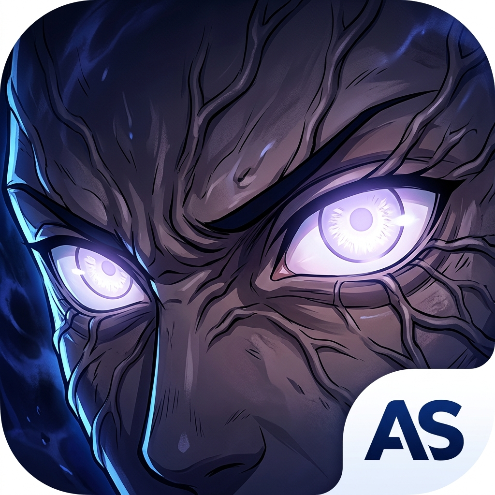

Snatch uncopyable text from images, videos, slides, and protected documents in milliseconds. Decode QR codes and read barcodes straight from your monitor with a single keystroke.

Byakugan Scan sits discretely in your menu bar. No bloated dock icon, no complex windows. Whenever you see text you can't select or a code you need to scan, fire your shortcut, drag your crosshair, and paste anywhere.
Extract text from videos, images, scanned invoices, diagrams, and remote desktops using Apple's neural Vision framework with multi-language support.
Scan any QR code on your display directly into URLs, contact cards, 2FA setup keys, or WiFi credentials without pulling out your smartphone.
Read 1D and 2D industrial symbologies including EAN-13, UPC-E, Code 128, Code 39, Data Matrix, Aztec, and PDF417 for retail and inventory tasks.
Extracted content is instantly formatted and copied to your clipboard. Customize line break behavior, spacing, and automatic whitespace trimming.
Review past captures, mark favorites, and copy previous scan results at any time directly from the menu bar popover.
Your screen pixels never leave your device. All processing occurs in local memory with zero network access and complete privacy.
Hit your hotkey or click the Byakugan eye icon in the menu bar to activate interactive crosshair selection.
Drag the crosshairs over any text, QR code, or barcode on your screen.
Extracted data is automatically in your clipboard. Press ⌘V to paste into Slack, Notion, Xcode, or Notes!
macOS requires this permission for any utility that reads pixels on screen. Byakugan Scan only captures the exact rectangular frame you select, processes it in RAM with Apple Vision, and discards it immediately.
Yes! It is 100% offline. Byakugan Scan does not include any networking permissions or remote dependencies.
Yes. Open Settings from the menu bar popover and configure custom shortcut combinations for each scan type.
English, Spanish, French, German, Italian, Portuguese, Japanese, Chinese (Simplified & Traditional), Korean, and more.